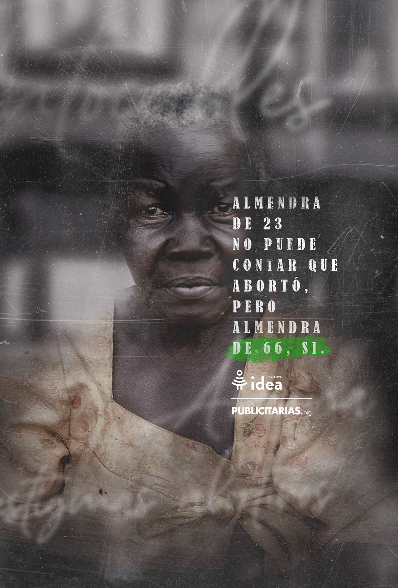

las intocables/ Iniciativa Idea - Ojo 2021
Fahrenheit DDB - 2021
Para desmitificar los mitos sobre el aborto y lograr que por fin sea legal en diversos países del mundo donde no lo es, descubrimos en el mismo código penal que prohíben a las mujeres abortar, un artículo que podría cambiarlo todo:
La prescripción de un delito.
Así logramos que miles de mujeres confesaran que abortaron sin ir a prisión.


